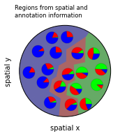
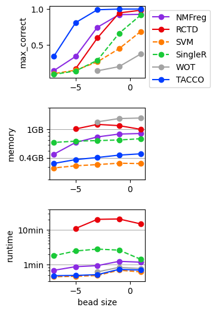
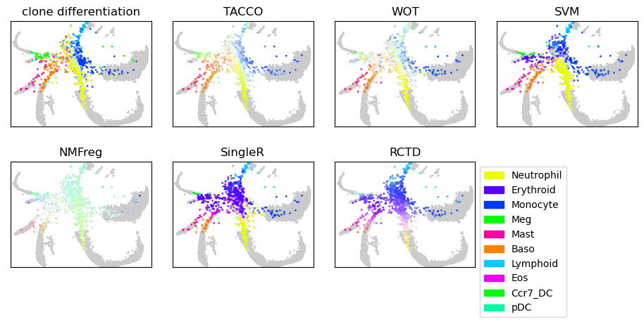

Examples¶
The notebooks for the examples and the workflow to prepare the necessary datasets are available in the example repository.

Benchmarking runtime and memory of annotation methods

Co-occurrence computations
In-silico mixed Mouse Colon scRNA-seq data

Mapping single cells into space

Object splitting for in-silico mixed scRNA-seq data and Slide-Seq data
Single molecule data: osmFISH mouse somato-sensory cortex

TACCO overview

Parameter Variations for annotation using Optimal Transport

Simulated single cell expression data with ambient contamination

Simulated single cell expression data with dropout

Single-cell differentiation

Slide-Seq Mouse Colon

Slide-Seq Mouse Olfactory Bulb - multiple pucks

Slide-Seq Mouse Olfactory Bulb - single puck

Visium Mouse Kidney